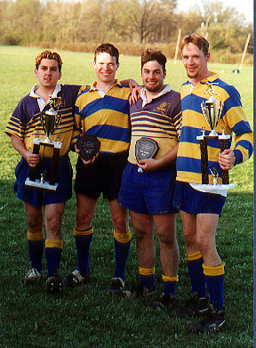

First double win (A and B ) since 1992 left to right B Championship Trophy - Matt Fasone, match secretary A MVP - Eric McDade, Captain B MVP - Todd Race A Championship Trophy - Mike Pachan, President 
Return to Tournament